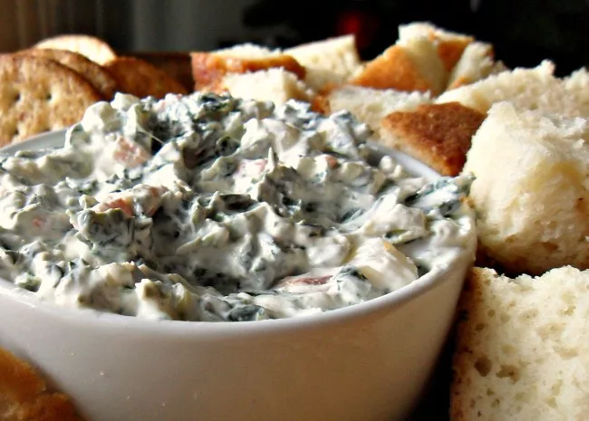

Spinach Dip

Description
This is the perfect no-cook, one-bowl summer to bring on a picnic or to a barbecue.
Simply mix together sour cream, mayo, spinach, chopped water chestnuts, and soup mix,
allow the flavors to meld in the fridge, then serve with bread, chips, or veggies.
It's as easy as that and completely delicious—over 1,100 five-star reviews agree.
Ingredients
- 1 (16 ounce) container sour cream
- 1 cup mayonnaise
- ½ (10 ounce) package frozen chopped spinach, thawed and drained
- 1 (4 ounce) can water chestnuts, drained and chopped
- 1 (1.8 ounce) package dry leek soup mix
- 1 (1 pound) loaf round sourdough bread
Steps
- Mix sour cream, mayonnaise, spinach, water chestnuts, and dry soup mix together
in a medium bowl. Chill in the refrigerator 6 hours, or overnight.
- Slice off the top of the sourdough round and pull out the soft interior,
leaving a sturdy bread bowl. Fill with spinach mixture. Tear removed bread
chunks into pieces for dipping.